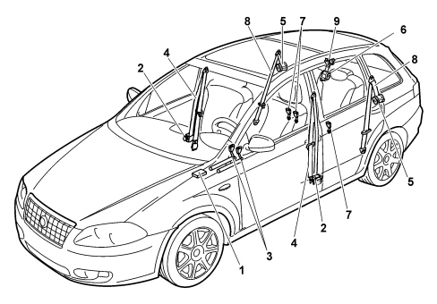
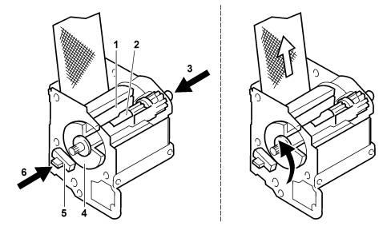

INTRODUCTION - SEAT BELTS AND ACCESSORIES
- Path
- Descriptions > 70 FITTINGS > 7065 SAFETY BELTS AND ACCESSORIES > INTRODUCTION - SEAT BELTS AND ACCESSORIES
- Kind
- system description
- Applies to
- all engines; all production periods
- Interactive page
- https://sloeber94.github.io/elrnDB-fCrm/en/#/194002225
Applies to: all engines; all production periods
SPECIFICATIONS
The vehicle is fitted with seat belts with three mounting points, even for the third rear passenger, with an automatic inertia reel.
The seat belts for the front seats have an electrically operated pretensioner with a load limiter on the belt mounting. The pretensioner unit includes a sensor that warns when the seat belt is not fastened by means of a warning light in the instrument panel coming on and a buzzer (with the device ON).
The rear seats have electrically operated seat belts with an inertia reel and a load limiter (on the reel) with three point mountings for the side seats, whilst the middle seat has a seat belt with a three point mounting and an inertia reel housed in the rear seat backrest.
COMPOSITION
View of the seat belt layout on the vehicle

1 - Air Bag control unit
2 - Automatic front reels
3 - Electrically operated front pretensioners (on mountings)
4 - Front seat belts
5 - Electrically operated rear pretensioners (on reels)
6 - Centre inertia reel
7 - Rear seat belt stalks
8 - Rear seat belts
9 - Rear centre seat belt
Front seat belts with pretensioners and load limiters
Activation of the seat belt pretensioners is controlled by the same strategy as the air bags. They have the function of recovering any slack in the seat belt and retaining the occupant from the very start of the impact by reducing the overall movement of the occupant inside the passenger compartment.
The pretensioners are fitted on the belt stalk therefore on the seat. The belts are also equipped with load limiters which decrease the force transmitted by the belts to the chest working in conjunction with the air bags for the front seats in restraining the occupant in the case of an impact.
For further details,
See descriptions 5580C AIR BAG SYSTEM
Automatic front reel with force limiter
The front seat belt reels are located in the side door pillars.

The force limitation is made possible by the use of a torsion bar (2). On the tension side (3), the torsion bar is connected to the reel shaft (1). On the locking side (6), the locking wheel (4) forms one piece with the torsion bar.
If activated, the stop pawl (5) stops the locking wheel. In the case of an impact, the reel shaft, pulled by the seat belt, is made to rotate in the opposite direction to the locking.
The torsion bar has been designed to start turning from the moment a precise traction force is exerted on the seat belt. In this case the seat belt is released as a result. The reel shaft can complete a maximum of 5 revolutions.
Rear reel with pretensioner and load limiter
The reels for the rear seat belts are fitted with electrically operated pretensioners, controlled by the Air Bag control unit with a load restricter device.
This device, designed to improve passive safety, is made up of a special torsion bar which permits controlled yield during the retention action in order to meter the force acting on the shoulders.
For further details,
See descriptions 5580C AIR BAG SYSTEM
Middle rear seat belt reel
The reel for the rear middle seat belt is located inside the rear seat backrest.
For further details,